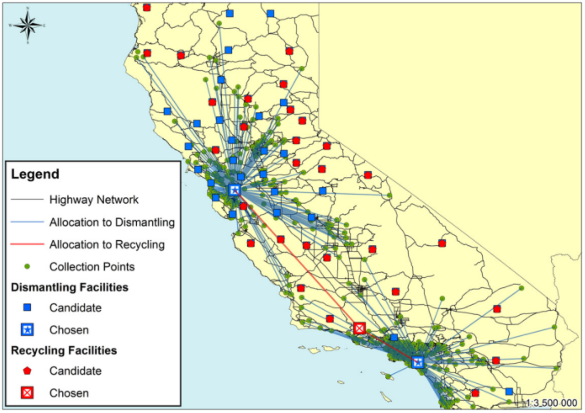
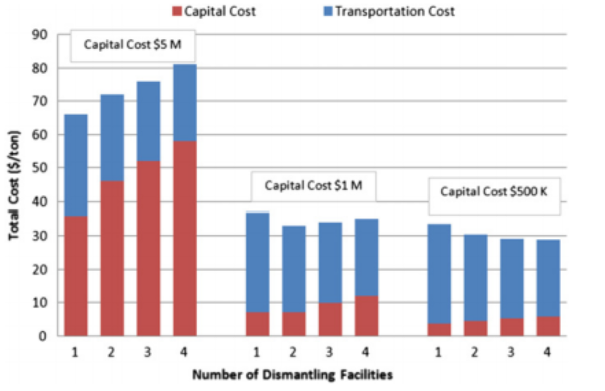
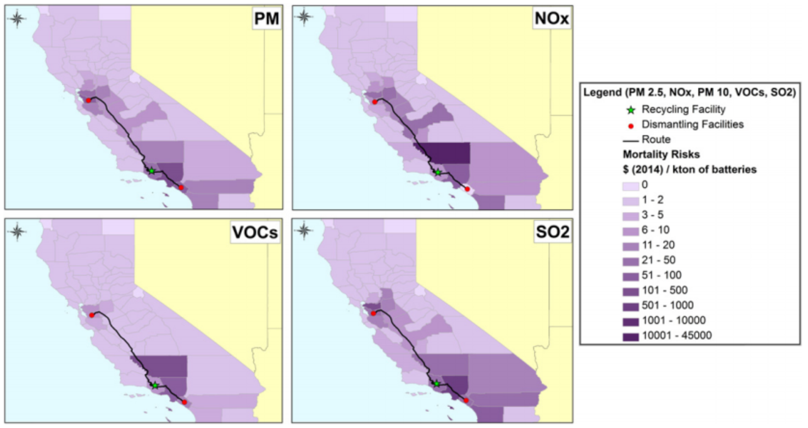

Plug-in electric vehicle (PEV) use in the United States (US) has doubled in recent years and is projected to continue increasing rapidly. This is especially true in California, which makes up nearly one third of the current US PEV market. Planning and constructing the necessary infrastructure to support this projected increase requires insight into the optimal strategies for PEV battery recycling. Utilizing life-cycle perspectives in evaluating these supply chain networks is essential in fully understanding the environmental consequences of this infrastructure expansion. This study combined life-cycle assessment and geographic information systems (GIS) to analyze the energy, greenhouse gas (GHG), water use, and criteria air pollutant implications of end-of-life infrastructure networks for lithium-ion batteries (LIBs) in California. Using economic and environmental criteria, GIS modeling revealed optimal locations for battery dismantling and recyclingfacilities for in-state and out-of-state recycling scenarios as well as multi-modal transportation.
California so far lacks the infrastructure to manage LIBs at their end-of-life. This work tries to understand the implications of scaling up PEV recycling in California by modeling the logistics of the end of life and calculating the supply chain management environmental impacts. Using state-specific data, we employed geospatial modeling to create scenarios for projected LIB waste streams and determine optimal dismantling and recycling facility locations for both in-state and multi-state systems. The GIS modeling methodology was designed to estimate the economic costs, GHG emissions, and human health impacts associated with the supply chain of the PEV batteries during their end-of-life. The centralized scenario assumed one recycling facility with the capacity to satisfy the annual disposed battery flows. An optimization analysis was used to estimate the optimal number of dismantling facilities in the system based on the minimization of capital and transportation costs. An algorithm was developed for geospatial optimization of dismantling and recycling facility sites using a location-allocation methodology that integrates the economic and environmental metrics into the segments of a GIS network. The optimization process was based on the minimization of the total ton-kilometers transported between the collection points and the final recycling destination.
Two alternative scenarios were developed to illustrate the end-of-life options in which batteries are recycled in-state and out-of-state. In-state recycling with a centralized facility could offer state-level management to the system and decrease the distance the batteries would need to travel. However, out-of state recycling allows for larger centralized facilities that would benefit from economies of scale and easier access to batteries and markets for recovered materials beyond California.
The figure below shows the candidate and chosen locations for dismantling and recycling facilities for in-state recycling using only truck transportation. Our optimization model sited the facilities in close proximity to the clusters of the collection points, as the objective function of the optimization was the minimization of total ton-kilometers transported from all collection points.

Intuitively, more collection and recycling points in a system would yield greater transportation cost savings as the total ton-kilometers traveled are minimized. However, an increased number of facilities lead to greater capital costs. Considering such a tradeoff, it is important to examine the connections between capital and transportation costs. Sensitivity analysis can provide insights into the tradeoffs between transportation cost savings and capital expenditures, yielding an optimal number of facilities. The capital cost of the facilities was calculated based on a facility’s original cost and capacity by applying an appropriate scaling factor to vary the cost by size.
Because the capital cost of the infrastructure is uncertain, a sensitivity analysis was run to determine the optimal number of dismantling facilities in the system for different capital costs. Assuming a capital cost of $1 million in figure below, which we used in this study as indicated by industry feedback [33], there is a threshold in the number of facilities in the system and the most cost effective option is using two dismantling facilities.

The LCA and GIS model results were combined to determine the human health impacts from LIB end-of-life management by applying impact factors from the Air Pollution Emission Experiments and Policy (APEEP) model. The APEEP model estimates the health damages that occur from the emissions of SO2, NOx, particulate matter (PM) and volatile organic compounds (VOCs). The air pollutant emissions that were taken into consideration were associated with the trucking and rail transportation from the GIS model, and the electricity consumption and on-site emissions of the pyrometallurgy facilities. For the on-site electricity use of the facilities, the corresponding emissions were allocated to the location of the power plants in California that were responsible for its production, based on the capacity of each plant, assigning appropriate emission factors according to the type of fuel used to produce electricity.

For further information please refer to the publications "Life-cycle implications and supply chain logistics of electric vehicle battery recycling in California. Environmental Research Letters. 2014" and "Energy and climate effects of second-life use of electric vehicle batteries in California through 2050. Journal of Power Sources. 2015".